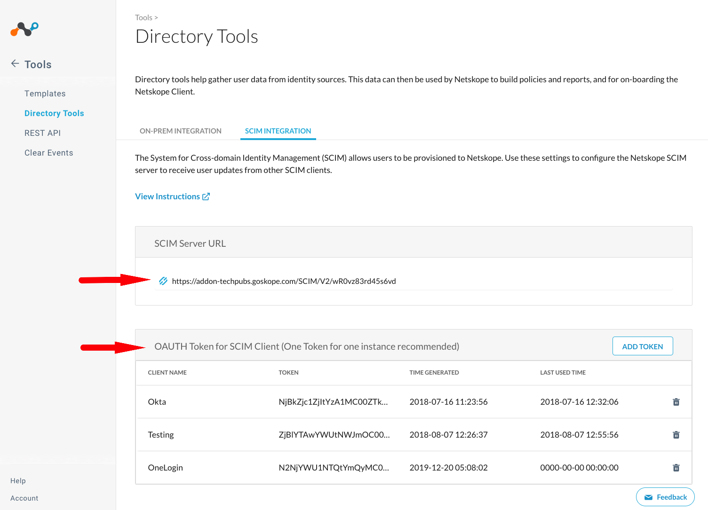
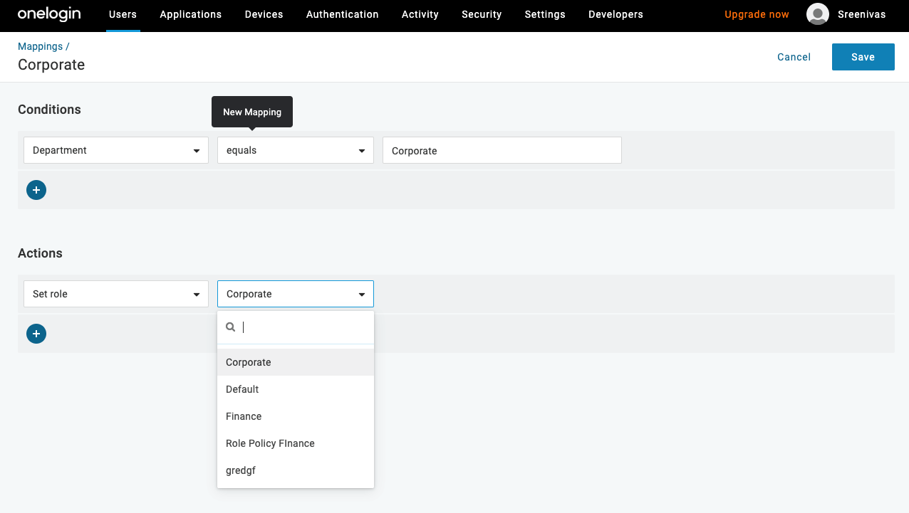
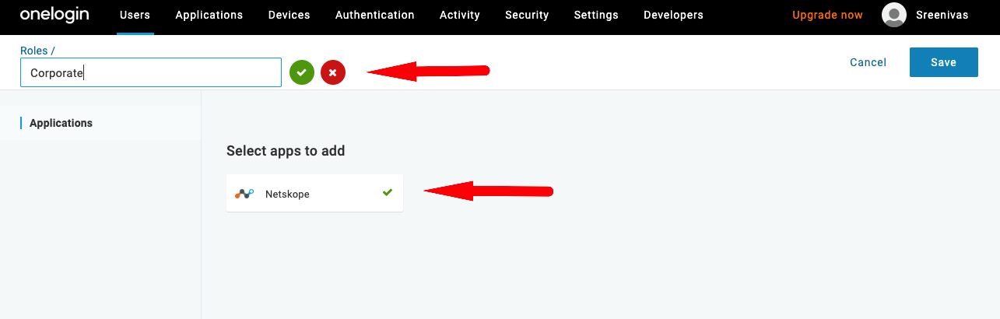
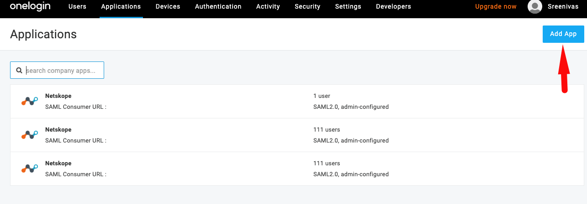
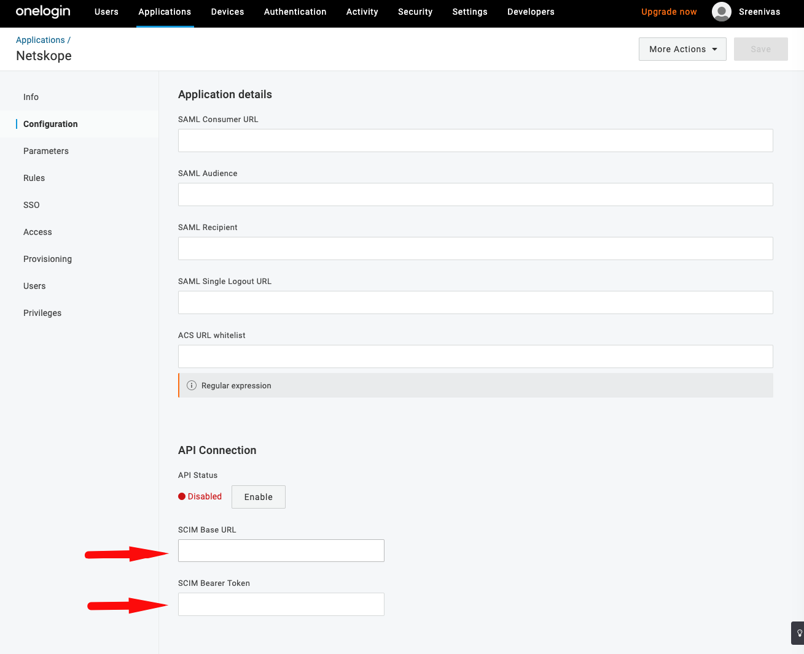

User and User Group Provisioning with OneLogin
Netskope supports provisioning of users and user groups authenticated via OneLogin. Netskope SCIM app supports the following:
Push New Users and User Groups
When a user or user group is created in AD and uploaded to OneLogin, the user is automatically provisioned in the Netskope tenant.
Push User Deactivation
When a user existing in OneLogin and provisioned in the Netskope tenant is deactivated by OneLogin, the user is deactivated in Netskope tenant as well.
Note
Netskope supports only SCIM 2.0 protocol
After a user is provisioned, any changes (edits) made to the users' username and email-address will not be reflected in the tenant.
This document provides details and instructions on how you can quickly integrate with OneLogin to provision users in Netskope cloud. Integrating with OneLogin, requires completing the following tasks:
Set up rules and mapping in your OneLogin admin console.
Create and configure Netskope SCIM app.
Before You Begin
Before you can create and configure Netskope SCIM app, ensure that you have the following:
Admin access to your OneLogin admin console.
Admin access to your Netskope tenant.
Obtain SCIM Base URL an SCIM Bearer Token (OAuth token) as follows
Go to Settings > Tools > Directory Tools page.
In the Directory Tools page, go to the SCIM Integration tab to locate SCIM Base URL and Bearer Token (OAuth Token for SCIM Client).

Setup OneLogin Roles and Mapping
Roles and mapping define which users or groups are provisioned in your Netskope tenant.
Note
Please refer to OneLogin documentation for more detailed and latest information.
Create Mappings
Mappings are combination of conditions and actions that define how a user(s) are mapped when provisioned to Netskope Tenant. To create a mapping:
Go to Users > Mappings and click the New Mapping button.

Give a name for the mapping and select conditions and actions that suits your provisioning criteria.

Create Roles
OneLogin role defines user access to Netskope app. When a user is assigned to a rule, they gain access to the Netskope app.
To proceed, login to your OneLogin admin console and click the Administration button located in the page header.

Goto Users > Roles and click New Role.

Give a name for the role and under Select apps to add, click Netskope. Click SAVE.All users mapped to this rule will have access to the selected app (s)
After the role is create, the page will return to display the list of created roles. Select the role that you just created to add users and privileges.

In the Users section, previously created mappings are listed by default. All users meeting the mapping conditions have access to apps assigned to the role. Alternatively, you can manually search and add users to the role.
In the Privileges section, add users to be added with admin role.
Create and Configure Netskope SCIM App
Login to your OneLogin admin console to begin configuring the Netskope SCIM app.
In the admin console, select Application under the Applications menu.
Click Add App button.
In the Find Applications page, search for Netskope app.

Select the Netskope app from the list to begin configuration.
In the application configuration page, click the Configuration option (on the left hand side).
Enter the SCIM Base URL and SCIM Bearer token that you have obtained from your Netskope Tenant.
Click Enable to test API connection.
This completes the Netskope app configuration. User and user group should be automatically provisioned when users or groups meet criterion specified in your roles and mapping conditions.